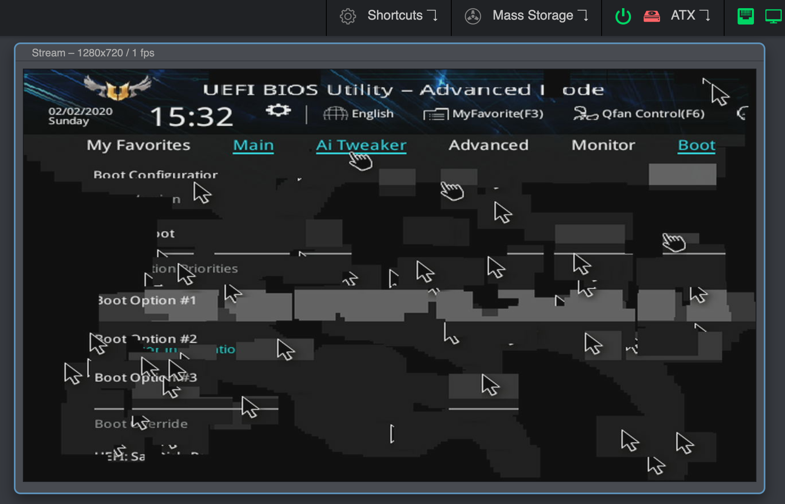

FAQ & Troubleshooting¶
As a first step, we recommend carefully reading our documentation on GitHub. Most steps to successfully set up your PiKVM are already described there. If you run into any issues you can check this page which will list common errors. If that still doesn't help you you're welcome to raise an issue ticket or join our Discord for further help.
Tip
If you can't find an answer to your question here, try the Community FAQ. It will be merged with this page in the future.
Common questions¶
Can I connect multiple servers to a single PiKVM?
Yes, but it will require additional work to set up. See this page.
How can I get the access to PiKVM in my local network over Internet?
You can use port forwarding for port 443 on your router if it has an external IP address. In all other cases, you can use the excellent free VPN service Tailscale, which is configured on PiKVM with a few simple commands.
Can I use PiKVM for gaming?
No, because:
- For HDMI-CSI bridge, bus bandwidth is not enough to transmit more than 1080p50.
- For HDMI-USB dongle, high latency and low video quality.
- General hardware video capture differs from software streaming and introduces additional latency.
- PiKVM can't transmit audio at this time. It will be available on PiKVM v3 HAT at some point in the future (implemented in the hardware, but doesn't have software support).
Can PiKVM do 4K video?
- For HDMI-CSI bridge, no. There is not enough bandwidth in the CSI bus for that much data. 1080p50 will max out the bandwidth.
- For the USB capture devices: technically yes, they will downsample to something smaller to meet the USB 2.0 bandwidth limitations, so the source may be 4k, but the stream will not.
- The 4K real-time video will not fit through the network anyway.
Where does the video latency come from?
Here is the chain of transferring an image to your browser or VNC client.
Capture device -> Compression -> Network -> Decompression -> Rendering
100-200ms is very, very fast for this. But we are working to speed things up even more.
Does PiKVM support sound?
At this time sound is not supported on any platform however, once sound is implimented, it will only be available for PiKVM v3 HAT. Due to a hardware bug in HDMI-CSI bridges, sound may or may not work.
Can I use PiKVM with non-Raspberry boards (Orange, Nano, etc)?
Yes, but you will have to prepare the operating system yourself. As for the PiKVM software, you will need to replace some config files (such as UDEV rules). If you are a developer or an experienced system administrator, you will not have any problems with this. In addition, we are open to patches. If you need help with this, please contact us via Discord.
Is PiKVM OS its own custom distro?
No. PiKVM OS is an Arch Linux ARM with our own repository for KVM-related packages. We distribute OS images (that is, our Arch Linux ARM build) to simplify installation, since PiKVM requires some tuning of the OS and special partitioning of the memory card.
Why is PiKVM OS based on Arch Linux ARM and not Raspbian / Raspberry Pi OS?
There are several reasons:
- Several years ago, when PiKVM was just starting out, Raspbian didn't have a minimalistic image and the transition to systemd was in full swing, which is why the distribution was not too stable.
- Raspbian did not have all the necessary packages in the repositories to satisfy most software dependencies.
- PiKVM was born as a pet project, and the founder likes Arch the most.
However, we plan to provide an alternative OS image based on Raspbian in the future - now it is quite stable.
First steps¶
I can't find PiKVM IP address in my network
Follow this guide.
What is the default password? How do I change it?
There are two types of accounts: OS and PiKVM (web interface) accounts. The system account root can be used for SSH/UART access and has the password root. The web interface account is called admin and has the password admin. The PiKVM account cannot be used for SSH access and vice versa.
To change passwords, use the following commands (under root):
su - # If you're in the webterm
rw # Switch filesystem to read-write mode
passwd root # Change OS root password
kvmd-htpasswd set admin # Change web ui admin password
ro # Back to read-only
How do I get root access in the web terminal?
The web terminal works with the account kvmd-webterm. This is a regular user with no administrator privileges and. In addition, sudo and login are disabled for this user for security reasons. To get root access, you need to use the su - command (minus is important) and enter the root password.
Where is the PiKVM configuration located?
Almost all KVMD (the main daemon controlling PiKVM) configuration files located in /etc/kvmd. You can also find nginx configs and SSL certificates there. KVMD configs use YAML syntax. The specific platform parameters can be found in the file /etc/kvmd/main.yaml and you should never edit it. Use /etc/kvmd/override.yaml to redefine the system parameters.
Another files that are also not recommended for editing have read-only permissions. If you edit any of these files, you will need to manually make changes to them when you upgrade your system. You can view the current configuration and all available KVMD parameters using the command kvmd -m.
I can't edit any file on PiKVM. Why is the system in read-only mode?
The PiKVM file system is always mounted in read-only mode. This measure prevents it from being damaged by a sudden power outage. To change the configuration you must first switch the filesystem to write mode using the command rw from root. After the changes, be sure to run the command ro to switch it back to read-only. If you get a message that the file system is busy, then the easiest way is to perform a reboot.
I want to get read-write filesystem all of the time
DON'T DO THIS
DON'T DO THIS
DON'T DO THIS
Seriously, DON'T. Read-only mode increases the life of the memory card and protects the filesystem from power loss failures. See the question above ^ ^ ^
You can turn it off, but don't say you weren't warned.
DON'T OPEN THIS SPOILER AND DON'T DO THIS
Okay, fine.
- Edit
/boot/cmdline.txtand change optionrotorw. - Do the same in
/etc/fstabfor the/bootpartition. - Comment
tmpfslines in/etc/fstabfor/var/liband/var/log.
But again: DON'T DO THIS
How to install or remove any packages in PiKVM OS?
PiKVM OS is based on Arch Linux ARM and uses the pacman package manager.
- Switch filesystem to RW-mode:
rw. - Update the package cache:
pacman -Syy. - Find some packages (
emacsfor example):pacman -Ss emacs. - Install it:
pacman -S emacs. - Remove it:
pacman -R emacs. - Switch filesystem to RO-mode:
ro.
How do I update PiKVM with the latest software?
PiKVM OS is based on Arch Linux ARM and is fully updated from the repository by a regular package manager. Connect to your PiKVM via ssh and run:
# rw
# pacman -Syu
# reboot
Pacman saves all installed packages in a compressed format so that you can roll back to the old version if something goes wrong. After you've updated and made sure everything works, it makes sense to clear the package cache so that it doesn't take up space on the SD card: rw; rm -rf /var/cache/pacman/pkg; ro.
I don't need ATX functions. How do I disable this in the Web UI?
If you don't need ATX power control you can disable the relevant Web UI menu in /etc/kvmd/override.yaml:
kvmd:
atx:
type: disabled
... then restart kvmd:
# systemctl restart kvmd
How to disable the web terminal?
# systemctl disable --now kvmd-webterm
How to completely disable authorization in PiKVM?
Edit the file /etc/kvmd/override.yaml:
kvmd:
auth:
enabled: false
... then restart kvmd:
[root@pikvm ~]# systemctl restart kvmd
Video problems¶
I can see the video but I can't see the WebRTC switch
WebRTC is an alternative mode for the default MJPEG and it's only supported on v2+ platforms with the CSI video capture device. See this page to solve any problems with WebRTC.
PiKVM does not show the video from the computer at all
- Double-check that the video capture device is connected correctly. For the CSI bridge, this should be exactly the camera port, for the USB dongle, strictly the port indicated in the picture.
- Some laptops do not output any signal until you switched the output (usually via the FN + and an F5 key on the keyboard).
- Your computer may have turned on sleep mode for the monitor. Move the mouse and turn it off.
The video works in the booted OS, but not in the BIOS/UEFI
The problem appears on Intel NUC, GA-H77-DS3H, and some other devices with using CSI bridge. All you need to do is change the EDID data. This is the information about supported resolutions that the CSI bridge reports to your computer.
Glitchy or wrong BIOS/UEFI resolution
On some motherboards, the BIOS may be displayed at a lower resolution, or with some rendering issues/glitches, specially on newer ASUS ones. Like this:

This can be solved by enabling the Compatibility Support Module (CSM) in your BIOS, usually under the Boot options.
If you can't or don't want to enable the CSM, you can try connecting a DisplayPort monitor, or a dummy plug. If you remove the DP cable/adapter the bug will reappear.
If none of this works, try connecting the DP cable first, boot into the BIOS, disable the CSM and shutdown (do not restart) your PC. Then, boot into the BIOS and enable the CSM before shutting down your PC. Then connect the HDMI and turn your PC on again.
CSI bridge does not work with official Raspberry Pi PoE HAT
Details here. The reason is that the official HAT has a built-in fan controller that conflicts with the TC358743 chip of the bridge. The solution is to disable the fan control and connect it to the power line so that it works continuously. To turn off the controller you need to add the line disable_poe_fan=1 to /boot/config.txt.
The video freezes a few seconds after the start, restarting the Web UI or VNC does not help
The story is here. Very-very rarely, Raspberry boards can have a hardware defect that causes some of the chip blocks to be unstable under normal power. The solution is to slightly increase the power supply, as in overclocking. Add over_voltage=1 (or over_voltage=2 if previous doesn't help) to /boot/config.txt and perform reboot.
To make sure that you are facing this particular problem, first perform a diagnostic:
- Boot the PiKVM without the specified options.
- Open Web-UI and wait for freezing.
- Click
System -> Reset Stream. - Click
System -> Open logand make sure that the log contains messages likeH264: Can't wait for the VCOS semaphore. - Make sure that the last message from ustreamer was
H264: Configuring MMAL encoder(not counting messages about connecting and disconnecting stream clients).
No image from computer with Linux + Awesome WM
Sometimes Awesome WM on Linux can't recognize a video output change on a cable. That is, if the cable was first inserted into the monitor, and then you reconnected it to PiKVM - it may happen that you will not see the image. It seems that the problem is Awesome WM, since for example with KDE, it is not reproducable. If you turn on your workstation with PiKVM already connected, everything will work fine.
USB problems (keyboard, mouse, mass storage, etc)¶
My computer does not recognize USB of PiKVM v2+ at all
- Make sure that you have used the correct USB cable with DATA lines to connect the OTG port for the Raspberry to the computer. You may have decided to use a USB hub instead of a Y-cable and it won't work. Use good cables and follow the instructions :)
- In rare cases, some very buggy BIOSes does not like HID and Mass Storage in one USB device. You can either disable Mass Storage, or use Arduino HID to physically separate them.
BIOS/UEFI does not recognize USB of v2+, but computer does
If you are using a USB hub or USB PCI controller, this may not be handled by your BIOS. Try to use another USB port. Some ports may have a built-in hub on the motherboard and a buggy BIOS that can't handle it.
The keyboard works in BIOS/UEFI, but the mouse does not
The BIOS does not support absolute mouse mode, which is preferred by PiKVM. In this case, you can enable relative or dual positioning mode.
I can't wake up suspended computer on v2+
This feature is experimental and requires manual activation. Perform a full system update, edit /etc/kvmd/override.yaml, and reboot. After that, you can use remote wakeup by pressing any keyboard key or mouse button.
otg:
remote_wakeup: true
Mass storage drive working (I can boot an image from PiKVM v2+), but keyboard/mouse does not
In rare cases, some very buggy BIOSes does not like HID and Mass Storage in one USB device. You can either disable Mass Storage, or use Arduino HID to physically separate them.
Big mouse latency on another Raspberry as managed server
Unusual case: RPi4 is used as a PiKVM to control RPi3. In this case, the mouse delay may be several seconds. To fix it, just add line usbhid.mousepoll=0 to /boot/config.txt to the server (i.e. RPI3 in our case) and reboot it.
Web UI problems¶
Chrome Certificate Issue
The latest versions of Chrome do not allow access to the page with a self signed certificate, so if you see the following screen when loading the PiKVM website:

You can proceed by typing thisisunsafe and Chrome will then load the page.
Pressing ESC in full screen mode causes this to close
Your browser does not support keyboard lock. Right now, only Chrome implements this.
I can't use this on iOS: the Web UI network indicator flashes yellow
Safari on iOS contains an old bug that prevents a web application from connecting over a web socket if you use a self-signed certificate on the server (the default for PiKVM). There are two solutions:
- Install a valid SSL certificate for PiKVM host to
/etc/kvmd/nginx/ssl. - Disable HTTPS at all in
/etc/kvmd/nginx/nginx.conf. To do this, comment some lines like in this file and restart web server:systemctl restart kvmd-nginx.
Danger
Don't do this for insecure networks or the Internet. Your passwords and what you type on the keyboard will be transmitted in unencrypted form.
The Web UI doesn't work properly in Firefox while it works fine in Chrome
This might be related to your specific hardware combination or browser hardware acceleration. Try disabling hardware acceleration in Firefox or updating your GPU and chipset drivers.
Unexpected interruption while loading the image for Mass storage drive
If problems occur when uploading even a small disk image it may be due to unstable network operation or antivirus software. It is well known that Kaspersky antivirus cuts off PiKVM connections during uploading, so you should add the PiKVM website to Kaspersky's list of exceptions or not filter web requests with the antivirus. Antivirus programs can also affect the performance of certain interface elements, for example the quality slider. For Kaspersky, the steps to add the network address of PiKVM's website to the exclusion list is: Protection -> Private browsing -> Categories and exclusions -> Exclusions.
I can't copy clipboard contents from the server (the machine controlled via PiKVM) to the client
The clipboard only works from the client to the server not vice versa. There is currently no way to do it.
Hardware problems (Wi-Fi, ATX, etc)¶
No Wi-Fi on Raspberry Pi Zero W
- If your device is unable to connect to the Wi-Fi network that you have setup check the 2.4 GHz Wi-Fi channel used by your Wi-Fi access point. If channels 12 to 14 are used (some countries have banned these channels) try to use a channel between 1 and 11.
- Some Zeros contain a defective Wi-Fi chip. You can either return the device to the store, or try the software workaround.
LEDs/Switches does not work in ATX control
Double check your wiring as per the documentation. Make sure you placed the relays (G3VM-61A1) in the correct orientation. The relays for switches (Power, Reset) have a different orientation than the ones for LEDs.